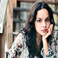

Home> Artists
Classical Singers
Bhimsen Joshi
- Born: 4th February, 1922
- Died: 24th January, 2011
- Best from Movies: The Gurus of Bandish, Savai Gandharva Music Festival
- Best from Albums: Evening Ragas, A rare Treat, Classical wonders of India, Live at Siri Fort, Sangeet Amrit
- Awards: Bharat Ratna, National Film Award, Padma Vibhushan, Padma Bhushan, Padma Shree
Pandit Jasraj
- Born: 28th January, 1930
- Best from Albums: Pride of India, Malhar, Khazana, Invocation, Anuraag
- Best from Movies: Ladki Sahyadri Ki, Birbal My Brother, 1920, Life of Pi
- Awards: Padma Vibhushan, Sangeet Kala Ratna, Maharashtra Gaurav Puraskar
Abdul Rashid Khan
- Born: 19th August, 1908
- Best from Albums: Laagun Re Junaiyan Tere Paiyan, Haare -Haare, Haare Piya - Desh, Nanadiya Tora Bhavan Na Bhave, Balma Tore karana, Nayan Bich Dore Lal
- Awards: Padma Bhushan, Lifetime achievement award, Bhuwalka Award, Sangeet Natak Akademi Award
Ustad Amjad Ali Khan
- Born: 9th October, 1945
- Best from Albums: Raag Yaman, Ru-Ba-Ru, Mesmerizing Maestros, Breaking Barriers, North India
- Awards: Padma Vibhushan, Padma Bhushan, Padma Shri, Sangeet Natak Akademi Award
Pandit Kumar Gandharva
- Born: 8th April, 1924
- Died: 12th January, 1992
- Best from Albums: Nirgun Ke Gun, Raga Bhairav Ke Prakaar, Surmanjari, A life in Music, Echoes of a Golden Voice
- Awards: Padma Vibhushan, Ras Sagar Award, Kashi Swar Ganga Award
K S Chithra
- Born: 27th July, 1963
- Best from Albums: Piya Basanti, Enchanting Melodies, Ustad and Divas, Nruthamandu krishna
- Awards: National Film Award, Filmfare Award, Nandi Award, Asianet film Award
Gayathri Girish
- Born: 27th May, 1973
- Best from Albums: Vaishnavam, Aarupadai Veedu Kshetra, Raga Manjari
- Awards: Madhura Murali Puraskar, Kalaimamani, Gaana Rathna, Kalai Nirai Mamani, Youth Excellence Award
Pantula Rama
- Born: 21st April, 1983
- Best from Albums: Bala, Kanakamaya, Sasivadana, Manipravalam
- Awards: Isai Peroli, Best Pallavi Singer, Outstanding Lady Vocalist
Sikkil Gurucharan
- Born: 21st June, 1982
- Best from Albums: Kaveri Pattinam, Peraanandam, The Three-eyed Shiva, The Six-faced Lord, The Lilting Neelambari
- Awards: Isai Peroli, Thandava Sangeetha Bharathi, Shanmukha Sironmani Award, Swarna Venkatesha Dikshitar award
Sudha Raghunathan
- Born: 30th April, 1972
- Best from Albums: Kaveri Pattinam, Peraanandam, The Three-eyed Shiva, The Six-faced Lord, The Lilting Neelambari
- Awards: Padma Bhushan, Padma Shri, Isai Peroli, Sangita Kokila
Folk Singers
Falguni Pathak
- Born: 12th March, 1971
- Best from Movies: Kanha Teri Basuri, Aha Aha, Nach Nach Nach, Yaad Piya Ki
- Best from Albums: Roshni, Beete Pal, Breathing Under Water, Chand k sath
- Awards: Padma Shree, International Viewer's Choice Award for MTV India
Daler Mehndi
- Born: 18th August, 1967
- Best from Movies: Rang De Basanti, Karle Baby Dance Wance, Zor Ka Jhatka, Tik Tuk
- Best from Albums: Bolo Ta Ra Ra, Tunak Tunak Tun, Ho Jayegi Balle Balle, Ek Dana, Kala Kauwa
- Awards: Rajiv Gandhi Excellence Award, Punjab Ratna Award, The Pride of India Award, Millenium Sikh Award
Parthiv Gohil
- Born: 18th February, 1976
- Best from Movies: Yoon Shabnami, Daras Bina Nahin Chain, Aa Safar
- Best from Albums: Dhol Taro Dhoom Machave, Aankh Mare, Kanudo Shun Jaane, Na Chadiya Hathiyar
- Awards: Gujarat Gaurav award, Bruhad Gujarat Mumbai award
Gurdas Maan
- Born: 4th January, 1957
- Best from Movies: Dil Vil Pyaar Vyaar, Zindagi Khoobsurat Hai, Pratigya, Kachehri
- Best from Albums: Peerh Tere Jaan Di, Pind Diyaan Galiyaan, Javo Ni Koi Morh Leavo, Kuriye Punjab Diye
- Awards: UK Asian Music Award, Jury Award
Sulochana Chavan

- Born: 13th March, 1933
- Best from Movies: Mala Ho Mhantat, Kasa Kai Patil, Phad Saambhal
- Best from Albums: Kheltana Rang Bai, Kalidar Kapoori, Padala Piklay, Aunda Lagin Karaycha
- Awards: Lata Mangeshkar Award, Sangeet Natak Akademi Award
Indi Pop Singers
Honey Singh
- Born: 15th March, 1983
- Best from Movies: Party All Night, Chaar Bottle Vodka, Party With Bhoothnath, Yaar Na Miley, Aata Majhi Satakli
- Best from Albums: This Party Gettin Hot, Bebo diya Galla Pink Pink, Blue Eyes, Mehrma, One Bottle Down
- Awards: UK Asian Award, MTV Europe Music Award, Zee Cine Award
Norah Jones

- Born: 30th March, 1979
- Best from Movies: Two Weeks Notice, Sesame Street, Ted
- Best from Albums: Sunrise, Not too late, Chasing Pirates, Miriam, Little Broken Hearts
- Awards: Grammy Award, World Music Award, Brit Award, Porin Award, Echo Award
Alisha Chinai
- Born: 18th March, 1965
- Best from Movies: You Are My Love, Dilruba, Bebo, Tinka Tinka, Oh My Darling
- Best from Albums: Made in India, Tu kahaan, Ek baar do baar, Aajaa, Oo la la
- Awards: Filmfare Best Female Playback Award, International Billboard Award, Freddie Mercury Award
Baba Sehgal
- Born: 23rd November, 1967
- Best from Movies: Kadhal Vandhale, Sokku Podi, Vella Bambaram, Bad Boy
- Best from Albums: Thanda Thanda Pani, Dilruba, Main Bhi Madonna, Double Gadbad
Milind Ingle
- Born: 4th November, 1965
- Best from Movies: Kajal, Yeh Hai Prem, Kabse Tera Hai Intezaar, Tu Ru Ru, O Priya
- Best from Albums: Rimjhim Dhun, Gaarva, Paaus Daatalela, Naak
Bollywood Singers
Sonu Nigam
- Born: 30th July, 1973
- Best from Movies: Sandese Aate Hain(1997), Suraj Hua Maddham(2001), Saathiya(2002), Zoobi Doobi(2009)
- Best from Albums: Kismat(1998), Jaan(2000), Yaad(2001), Neene Bari Neene(2009)
- Awards: Filmfare Award, Zee Cine Award, National Film Award, Indian Telly Award
Shreya Ghoshal
- Born: 12th March, 1984
- Best from Movies: Jaadu Hai Nasha Hai(2003), Kaise Mujhe(2008),Saans(2012), Nagada Sang Dhol(2013), Manwa Laage(2014)
- Best from Albums: Akasher Mukhomukhi(2002), Har Pal(2008), Humnasheen(2014)
- Awards: Filmfare Award, Star Guild Award, National Film Award, Filmfare Award, Zee Cine Award
Lata Mangeshkar
- Born: 28th September, 1929
- Best from Movies: Kabhi Khushi Kabhie Gham, Khamoshiyan Gungunane Lagi, O Paalanhaare, Ek Tu Hi Bharosa
- Best from Albums: Ram ratan Dhan Payo, Abhimaan, Kanyadan, Babul Pyare
- Awards: Bharat Ratna, Padma Bhushan, Padma Vibhushan, Dada Saheb Phalke Award
Udit Narayan
- Born: 1st December, 1955
- Best from Movies: Yeh Tara Woh Tara, Main Yahan Hoon, Tumse Milna, Jo Bhi Kasmein, Jaane Kyon
- Best from Albums: Jaane Hoga Kya, Hey bro, kill dill
- Awards: National Film Award , Filmfare Award, Zee Cine Award, Star Screen Award
Alka Yagnik
- Born: 20th March, 1966
- Best from Movies: Tu Muskura, Ringa Ringa, Aye Hairate Aashiqi, Chori Chori
- Best from Albums: Yatra, Kaash Tum Hote, Lories
- Awards: Filmfare Award, National Award, Bollywood Movie Award, IIFA Award